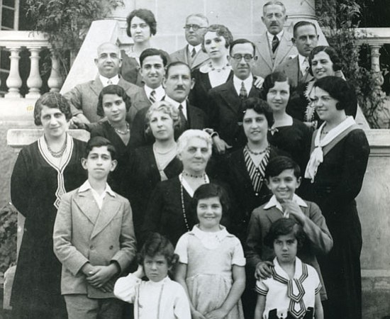
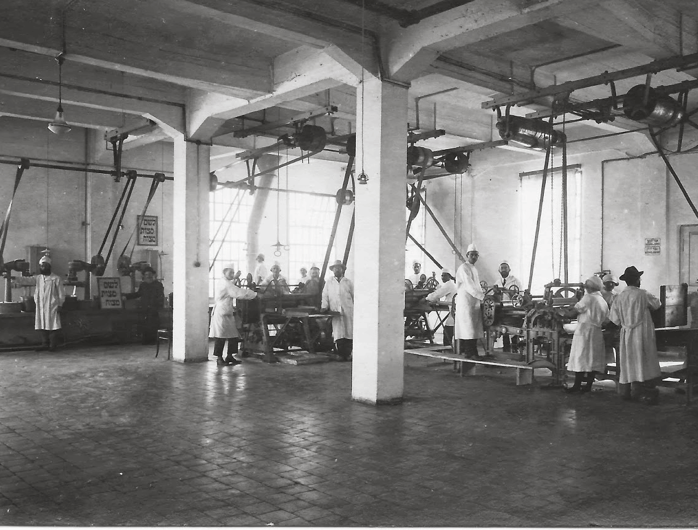

Yaakov Yamikah’s comes from a Jewish immigrant to Israel. My grandfather, Yaakov, first came to Israel in 1948 with ten rubles in his pocket. He started selling yamikahs to the local synagogue. He infused classic yamikah designs with American or Russian or African fashion designs. Quickly, Yaakov Yamikahs became the most popular yamikahs in all of Israel. Legend has it, that every prime minister of Israel owns one. Yaakov’s Yamikah’s became a symbol of Israel becoming an International state and being a part of the world not only politically, but in fashion and culture. Be a part of not only Israel, but the world when you wear one of Yaakov’s Yamikah’s.
Yaakov also came with his family and first began working at a Yamikah factory, this is where he learned how to make them. Below is a photo of his family and factory.
 Yaakov 1948